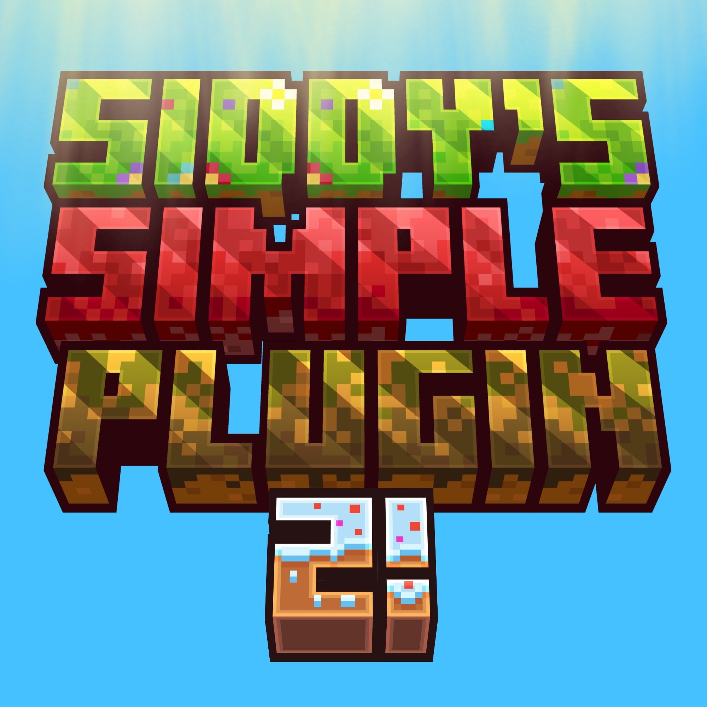

Siddy's Simple Plugin
Documentation
Search
Help & Support
Preparing your documentation...
ESC
Find something
Search pages, commands, permissions and more.
This documentation website requires JavaScript to display its content.